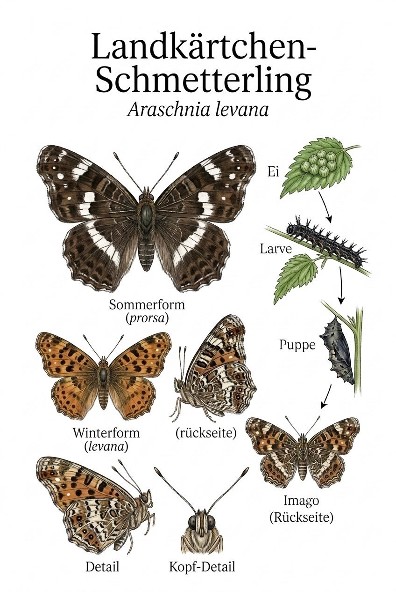
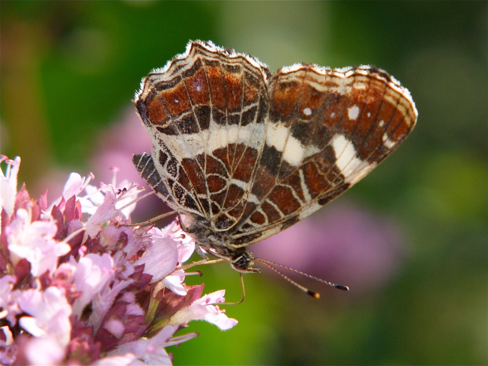

Insekten › Schmetterlinge › Tagfalter › Edelfalter

Landkärtchen · Araschnia levana
Illustration im Stil klassischer Lehrtafeln (teils KI-gestützt erstellt)
Araschnia levana

Foto: Michael Baur · Olympus OM-5 · CC BY-NC
Das Landkärtchen leistet sich einen Trick, der Schmetterlingsforscher lange in die Irre geführt hat: Seine Frühlings- und Sommergeneration sehen so unterschiedlich aus, dass sie jahrhundertelang als zwei verschiedene Arten galten. Die Frühlingsform (levana) ist orange mit schwarzen Flecken. Die Sommerform (prorsa) ist fast schwarz mit weißen Bändern. Erst Carl von Linné erkannte, dass es sich um ein und dieselbe Art handelt – ausgelöst durch die Tageslänge während der Puppenzeit.
Klappt das Landkärtchen die Flügel zusammen, zeigt die Unterseite ein feines Netz aus weißen Linien auf braunem Grund – wie die Linien einer alten Landkarte. Diesem Muster verdankt der Falter seinen charmanten deutschen Namen. Die Engländer sprechen von der Map Butterfly, die Franzosen nennen ihn La Carte geographique. Kaum ein anderer Falter hat so phantasievolle Namen in so vielen Sprachen.
Das Landkärtchen ist kein Weitreisender wie Admiral oder Distelfalter. Es lebt treu in feuchten Laubwäldern, entlang von Bächen und auf beschatteten Waldlichtungen. Überall dort, wo Brennnesseln an feuchten, halbschattigen Stellen wachsen, kann man es finden. Es fliegt niedrig, oft dicht über dem Boden, und hält kurze Ruhepausen auf Blättern inne – Flügel ausgebreitet, wie um seine Landkartenunterseite der Welt zu zeigen.
Texte und Bilder aus der Broschüre „Schmetterlinge im Ebsdorfergrund“ (Michael Baur), 1:1 übernommen · Fotos CC BY-NC, Illustrationen im Stil klassischer Lehrtafeln. Die Artseite ist der gemeinsame Endpunkt von Bestimmungsschlüssel und Stammbaum.